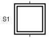

The initial step is a Step that is automatically activated when the application is started. Initial steps may be located on top-level workspaces or within workspace objects.
Common Methods
Same as Step.